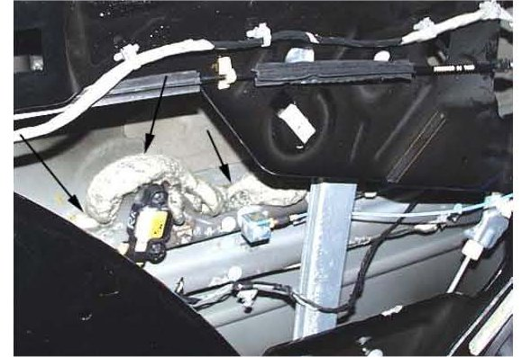
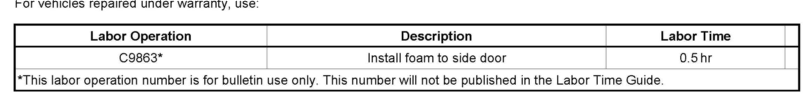

Restraints - Side Air Bag Deploys If Door Is Slammed
TECHNICALBulletin No.: 09-08-64-004
Date: March 03, 2009
Subject:
Side Air Bag Function (Apply Foam to Door)
Models:
2007-2008 Cadillac Escalade Models
2007-2008 Chevrolet Avalanche, Suburban, Tahoe
2007-2008 GMC Yukon Models
Attention:
If the air bag has been deployed, contact a GM Engineer for further information prior to repairing the vehicle.
Condition
In some extremely rare cases, a customer may report that when the front or rear side door is closed with extreme or unusual force, the side air bag may deploy. In these cases, the engine must be running. If the air bag has been deployed, contact a GM Engineer for further information prior to repairing the vehicle.
Correction
Important:
Complete the side door repair steps below, then proceed to side air bag replacement following SI.
1. Remove the side door trim and water deflector.
2. Inspect all of the components in the door to make sure that they are fastened or routed properly before proceeding to step 3.

3. If you have not found anything loose or misrouted inside the door, add additional Fusor super flexible anti-flutter foam-fast set, Fusor P/N 121/124, or 3M Automix P/N 8463. Run a continuous, thick bead (shown above) the entire length between the door outer panel and the top edge of inner safety beam. Make multiple passes behind the side impact sensor portion of the beam as required to fill in any gaps.
4. Apply Fusor super flexible anti-flutter foam-fast set, Fusor P/N 121/124, or 3M Automix P/N 8463, in a continuous bead the entire length between the beltline reinforcement and the door outer panel.
5. Install the side door trim and water deflector.
Parts Information

Warranty Information

Disclaimer